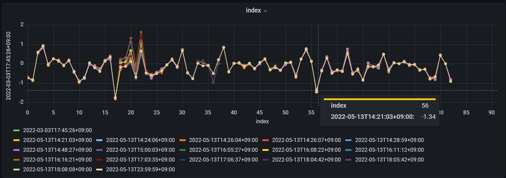

Functions
Categories
Functions are categorized into below groups.
Transform: converts the timeseries datapoints from its datapoint values.
Array to Scalar: converts the array data to scalar timeseries data with some method.
Filter Series: picks up some series that meet certain condition.
Sort: sorts the list of timeseries.
Options: adds option parameters.
Transform Functions
scale
- scale(factor)
Multiplies datapoint by factor at each point.
Examples:
scale(10)
scale(-0.5)
offset
- offset(delta)
Adds delta to each datapoint.
Examples:
offset(50)
offset(-0.5)
delta
- delta()
Calculates difference between datapoint and its before point at each point.
fluctuation
- fluctuation()
Subtracts first datapoint value from each datapoint.
movingAverage
- movingAverage(windowSize)
Calculates the moving average of datapoints over a fixed number of past points, specified by windowSize param.
Examples:
movingAverage(10)
movingAverage(50)
Array to Scalar Functions
toScalarByAvg
- toScalarByAvg()
Converts the array data to the scalar data with the average value.
toScalarByMax
- toScalarByMax()
Converts the array data to the scalar data with the maximum value.
toScalarByMin
- toScalarByMin()
Converts the array data to the scalar data with the minimum value.
toScalarBySum
- toScalarBySum()
Converts the array data to the scalar data with the total value.
toScalarByMed
- toScalarByMed()
Converts the array data to the scalar data with the median value.
toScalarByStd
- toScalarByStd()
Converts the array data to the scalar data with the standard deviation value.
Filter Series Functions
top
- top(number, value)
Returns top N series sorted by value. Available value is as following: avg, min, max, absoluteMin, absoluteMax, and sum.
Examples:
top(5, max)
top(10, avg)
bottom
- bottom(number, value)
Returns bottom N series sorted by value. Available value is as following: avg, min, max, absoluteMin, absoluteMax, and sum.
Examples:
bottom(5, avg)
bottom(10, min)
exclude
- exclude(pattern)
Exclude PV data that match the regular expression.
Examples:
exclude(PV[0-9])
Sort Functions
sortByAvg
- sortByAvg(order)
Sort the list of timeseries by the average value across the time period specified.
Examples:
sortByAvg(desc)
sortByAvg(asc)
sortByMax
- sortByMax(order)
Sort the list of timeseries by the maximum value across the time period specified.
Examples:
sortByMax(desc)
sortByMax(asc)
sortByMin
- sortByMin(order)
Sort the list of timeseries by the minimum value across the time period specified.
Examples:
sortByMin(desc)
sortByMin(asc)
sortBySum
- sortBySum(order)
Sort the list of timeseries by the total value across the time period specified.
Examples:
sortBySum(desc)
sortBySum(asc)
sortByAbsMax
- sortByAbsMax(order)
Sort the list of timeseries by the absolute maximum value across the time period specified.
Examples:
sortByAbsMax(desc)
sortByAbsMax(asc)
sortByAbsMin
- sortByAbsMin(order)
Sort the list of timeseries by the absolute minimum value across the time period specified.
Examples:
sortByAbsMin(desc)
sortByAbsMin(asc)
Options Functions
fieldName
- fieldName(name)
Set the field name to be retrieved. VAL, SEVR and STAT are currently supported. SEVR and STAT can be retrieved as Enum data by setting SEVR as Enum or STAT as Enum.
This function is only effective if you are using the backend data retrieval.
Examples:
fieldName(VAL)
fieldName(SEVR)
fieldName(SEVR as Enum)
maxNumPVs
- maxNumPVs(number)
Set maximum number of PVs you can select for a target.
Examples:
maxNumPVs(500)
binInterval
- binInterval(interval)
Set binning interval for processing of data. For example, if binInterval is set 100 and operator in query is set mean then returned values are average values in 100 seconds wide bins.
Examples:
binInterval(100)
disableAutoRaw
- disableAutoRaw(boolean)
Disable auto raw feature.
Examples:
disableAutoRaw(true)
disableAutoRaw(false)
disableExtrapol
- disableExtrapol(boolean)
Disable extrapolation for raw data.
Examples:
disableExtrapol(true)
disableExtrapol(false)
hideInvalid
- hidInvalid(boolean)
Hide the sample data whose severity is invalid with a null value. Default setting can be overwritten by this function. This function is only effective if you are using the backend data retrieval and data is not string or array.
Examples:
hideInvalid(true)
hideInvalid(false)
arrayFormat
- arrayFormat(format)
This function changes a format of array.
There are 3 types of format: timeseries, index, and dt-space.
See Waveform visualization · Issue #83 · sasaki77/archiverappliance-datasource for details and hitory.
timeseries
timeseries format, the default format of array, has a time column and columns for each element of the array.
Following is an example of array data for a PV that has 361 elements.
time |
PV:NAME[0] |
PV:NAME[1] |
… |
PV:NAME[360] |
|---|---|---|---|---|
1577804410000 |
val1_1 |
val1_2 |
… |
val1_361 |
1577804510000 |
val2_1 |
val2_2 |
… |
val2_361 |
index
index format has a index column and columns for array data at each sampling time.
Column name for each sampling time is a RFC3339-style time format.
index |
2020-01-01T00:00:10.000Z |
2020-01-01T00:01:50.000Z |
|---|---|---|
0 |
val1_1 |
val2_1 |
1 |
val1_2 |
val2_2 |
… |
… |
… |
360 |
val1_361 |
val2_361 |
Time series panel can’t show a plot with this format, but XY chart panel can show the data with the x-axis as index.

dt-space
dt-space format transforms multiple datapoints into a single timeseries data.
It creates a new time vector starting from the sampling time. Timestamp of Nth elements of the array is reproduced with (sampling time + N milliseconds).
time |
PV:NAME |
|---|---|
1577804410000 |
val1_1 |
1577804410001 |
val1_2 |
… |
… |
1577804410360 |
val1_361 |
1577804510000 |
val2_1 |
1577804510001 |
val2_2 |
… |
… |
1577804510360 |
val2_361 |
Examples:
arrayFormat(timeseries)
arrayFormat(index)
arrayFormat(dt-space)
ignoreEmptyErr
- ignoreEmptyErr(boolean)
Ignore response is empty errors.
Archiver Appliance sometimes returns an empty response as follows.
[]
The plugin handles such a response as an error. This function ignores such errors.
Examples:
ignoreEmptyErr(true)
ignoreEmptyErr(false)